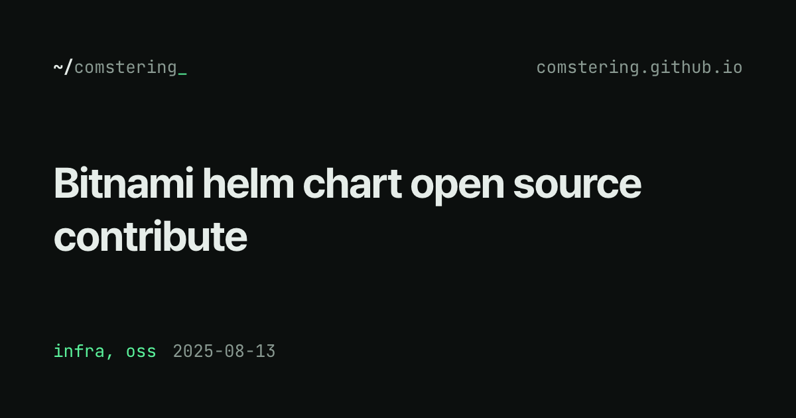
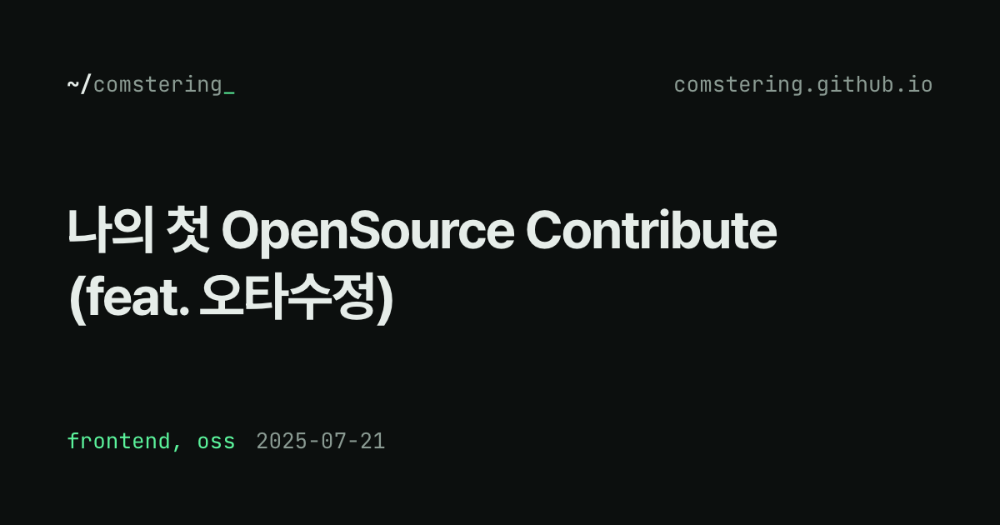
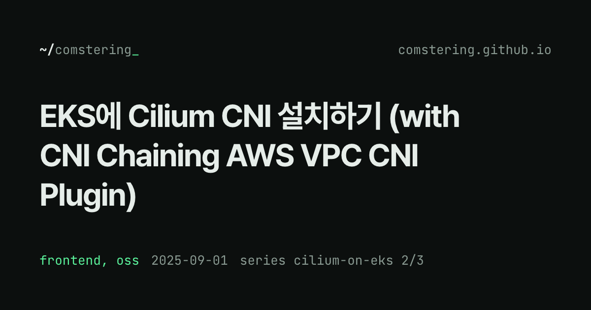
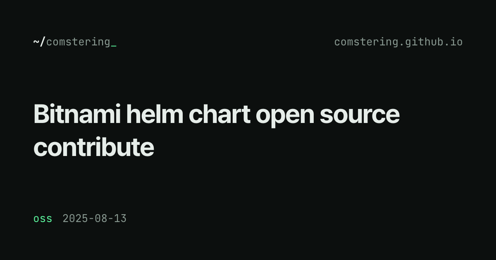
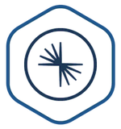
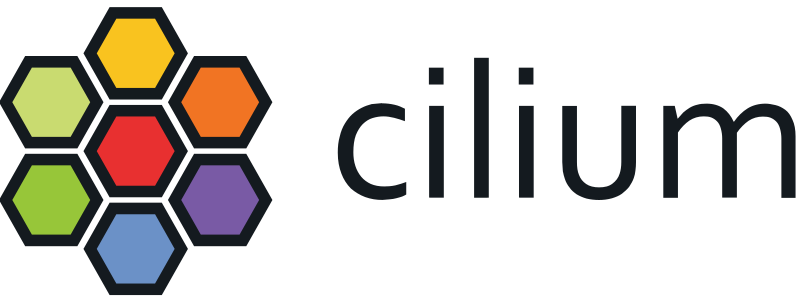
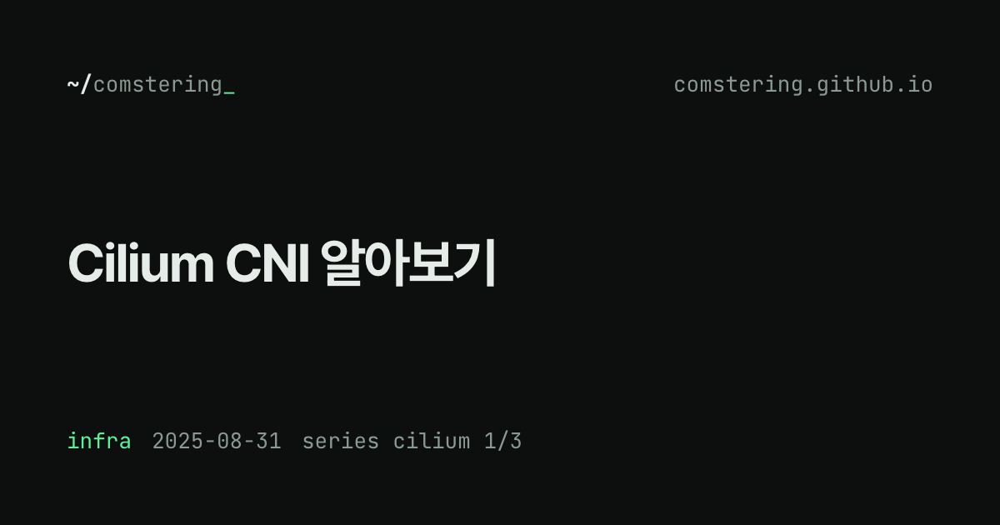

Bitnami helm chart open source contribute
두번째 오픈소스 기여, 이번엔 크리티컬한 이슈를 수정했다!

PRD-003 4장 categories 대표 유무(A안·B안)와 목록 썸네일 교체를 같은 데이터로 나란히 놓았다. 답변은 12-phase1-design-response.md.
A안 대표 1개
두번째 오픈소스 기여, 이번엔 크리티컬한 이슈를 수정했다!

처음으로 Contribution 해본 경험

360px 메타 줄 길이 확인용 행

infra 칩으로 들어와도 Bitnami 행에는 oss만 보인다.
B안 전부, 고정 순서
두번째 오픈소스 기여, 이번엔 크리티컬한 이슈를 수정했다!
처음으로 Contribution 해본 경험
360px 메타 줄 길이 확인용 행
세 번째 행(가상 최악 조합)까지 메타가 한 줄에 들어간다.
A안 대표 accent + 두 번째 mute
Bitnami helm chart open source contribute
mute인 infra도 링크인데 링크처럼 보이지 않는다(08 M4와 같은 문제).
B안 둘 다 같은 링크 스타일
Bitnami helm chart open source contribute
accent는 "링크" 한 가지 뜻으로만 쓰인다. 한 묶음이라 강조가 둘로 갈리지 않는다.
A안 대표 1개

B안 전부
B안 최악 조합 카테고리 2개 + 긴 시리즈
하단 줄 1040px 중 약 780px 사용.
지금 글마다 수동 로고
두번째 오픈소스 기여, 이번엔 크리티컬한 이슈를 수정했다!

VPC CNI와 다른 Cilium CNI에 대해서 알아보자

09 A안 OG 축소본
두번째 오픈소스 기여, 이번엔 크리티컬한 이슈를 수정했다!
VPC CNI와 다른 Cilium CNI에 대해서 알아보자

128px에서 OG 제목은 약 7px. 옆 제목을 읽을 수 없는 크기로 한 번 더 쓴 것이 된다.
추천 목록 썸네일 없음
두번째 오픈소스 기여, 이번엔 크리티컬한 이슈를 수정했다!
VPC CNI와 다른 Cilium CNI에 대해서 알아보자
모바일(640px 미만)은 지금도 썸네일을 숨긴다. 데스크톱도 같게 하면 홈 이미지 요청 14개가 0개가 된다.